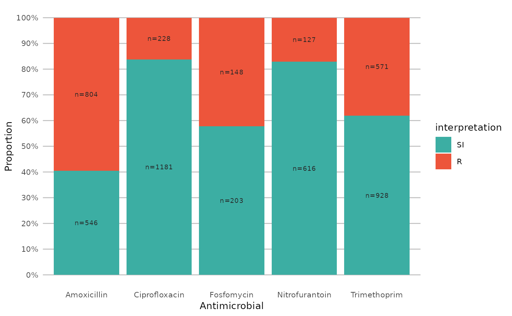
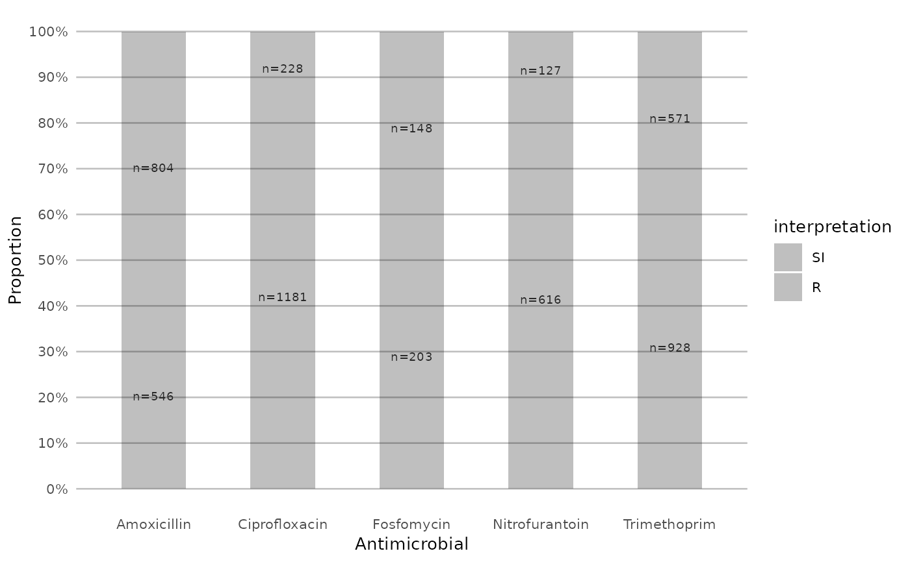
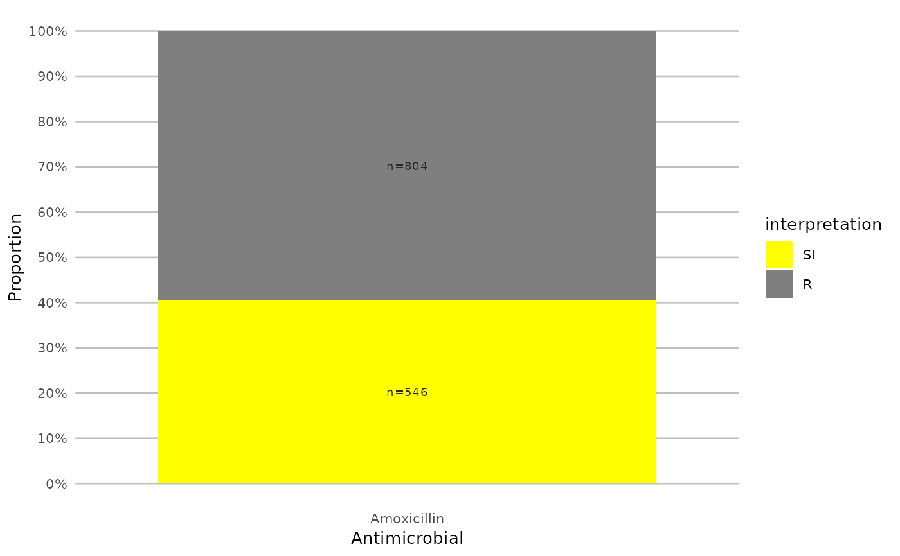
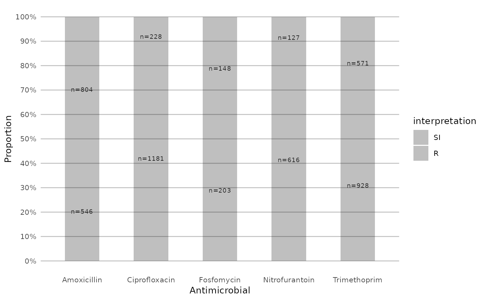
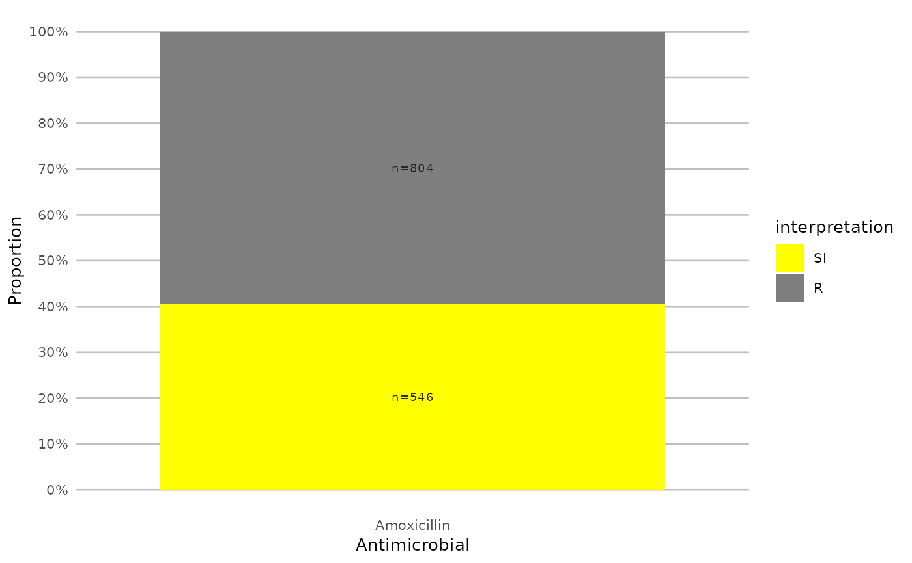

Use these functions to create bar plots for AMR data analysis. All functions rely on ggplot2 functions.
Usage
ggplot_sir(data, position = NULL, x = "antibiotic",
fill = "interpretation", facet = NULL, breaks = seq(0, 1, 0.1),
limits = NULL, translate_ab = "name", combine_SI = TRUE,
minimum = 30, language = get_AMR_locale(), nrow = NULL, colours = c(S
= "#3CAEA3", SDD = "#8FD6C4", SI = "#3CAEA3", I = "#F6D55C", IR = "#ED553B",
R = "#ED553B"), datalabels = TRUE, datalabels.size = 2.5,
datalabels.colour = "grey15", title = NULL, subtitle = NULL,
caption = NULL, x.title = "Antimicrobial", y.title = "Proportion", ...)
geom_sir(position = NULL, x = c("antibiotic", "interpretation"),
fill = "interpretation", translate_ab = "name", minimum = 30,
language = get_AMR_locale(), combine_SI = TRUE, ...)Arguments
- data
A data.frame with column(s) of class
sir(seeas.sir()).- position
Position adjustment of bars, either
"fill","stack"or"dodge".- x
Variable to show on x axis, either
"antibiotic"(default) or"interpretation"or a grouping variable.- fill
Variable to categorise using the plots legend, either
"antibiotic"(default) or"interpretation"or a grouping variable.- facet
Variable to split plots by, either
"interpretation"(default) or"antibiotic"or a grouping variable.- breaks
A numeric vector of positions.
- limits
A numeric vector of length two providing limits of the scale, use
NAto refer to the existing minimum or maximum.- translate_ab
A column name of the antimicrobials data set to translate the antibiotic abbreviations to, using
ab_property().- combine_SI
A logical to indicate whether all values of S, SDD, and I must be merged into one, so the output only consists of S+SDD+I vs. R (susceptible vs. resistant) - the default is
TRUE.- minimum
The minimum allowed number of available (tested) isolates. Any isolate count lower than
minimumwill returnNAwith a warning. The default number of30isolates is advised by the Clinical and Laboratory Standards Institute (CLSI) as best practice, see Source.- language
Language of the returned text - the default is the current system language (see
get_AMR_locale()) and can also be set with the package optionAMR_locale. Uselanguage = NULLorlanguage = ""to prevent translation.- nrow
(when using
facet) number of rows.- colours
A named vactor with colour to be used for filling. The default colours are colour-blind friendly.
- datalabels
Show datalabels using
labels_sir_count().- datalabels.size
Size of the datalabels.
- datalabels.colour
Colour of the datalabels.
- title
Text to show as title of the plot.
- subtitle
Text to show as subtitle of the plot.
- caption
Text to show as caption of the plot.
- x.title
Text to show as x axis description.
- y.title
Text to show as y axis description.
- ...
Other arguments passed on to
geom_sir()or, in case ofscale_sir_colours(), named values to set colours. The default colours are colour-blind friendly, while maintaining the convention that e.g. 'susceptible' should be green and 'resistant' should be red. See Examples.
Details
At default, the names of antimicrobials will be shown on the plots using ab_name(). This can be set with the translate_ab argument. See count_df().
geom_sir() will take any variable from the data that has an sir class (created with as.sir()) using sir_df() and will plot bars with the percentage S, I, and R. The default behaviour is to have the bars stacked and to have the different antimicrobials on the x axis.
Additional functions include:
facet_sir()creates 2d plots (at default based on S/I/R) usingggplot2::facet_wrap().scale_y_percent()transforms the y axis to a 0 to 100% range usingggplot2::scale_y_continuous().scale_sir_colours()sets colours to the bars (green for S, yellow for I, and red for R). with multilingual support. The default colours are colour-blind friendly, while maintaining the convention that e.g. 'susceptible' should be green and 'resistant' should be red.theme_sir()is a ggplot2 theme with minimal distraction.labels_sir_count()print datalabels on the bars with percentage and amount of isolates usingggplot2::geom_text().
ggplot_sir() is a wrapper around all above functions that uses data as first input. This makes it possible to use this function after a pipe (%>%). See Examples.
Examples
# \donttest{
if (require("ggplot2") && require("dplyr")) {
# get antimicrobial results for drugs against a UTI:
ggplot(example_isolates %>% select(AMX, NIT, FOS, TMP, CIP)) +
geom_sir()
}
if (require("ggplot2") && require("dplyr")) {
# prettify the plot using some additional functions:
df <- example_isolates %>% select(AMX, NIT, FOS, TMP, CIP)
ggplot(df) +
geom_sir() +
scale_y_percent() +
scale_sir_colours(aesthetics = "fill") +
labels_sir_count() +
theme_sir()
}
if (require("ggplot2") && require("dplyr")) {
# or better yet, simplify this using the wrapper function - a single command:
example_isolates %>%
select(AMX, NIT, FOS, TMP, CIP) %>%
ggplot_sir()
}

if (require("ggplot2") && require("dplyr")) {
# get only proportions and no counts:
example_isolates %>%
select(AMX, NIT, FOS, TMP, CIP) %>%
ggplot_sir(datalabels = FALSE)
}
 if (require("ggplot2") && require("dplyr")) {
# add other ggplot2 arguments as you like:
example_isolates %>%
select(AMX, NIT, FOS, TMP, CIP) %>%
ggplot_sir(
width = 0.5,
colour = "black",
size = 1,
linetype = 2,
alpha = 0.25
)
}

if (require("ggplot2") && require("dplyr")) {
# you can alter the colours with colour names:
example_isolates %>%
select(AMX) %>%
ggplot_sir(colours = c(SI = "yellow"))
}

if (require("ggplot2") && require("dplyr")) {
# but you can also use the built-in colour-blind friendly colours for
# your plots, where "S" is green, "I" is yellow and "R" is red:
data.frame(
x = c("Value1", "Value2", "Value3"),
y = c(1, 2, 3),
z = c("Value4", "Value5", "Value6")
) %>%
ggplot() +
geom_col(aes(x = x, y = y, fill = z)) +
scale_sir_colours(
aesthetics = "fill",
Value4 = "S", Value5 = "I", Value6 = "R"
)
}
if (require("ggplot2") && require("dplyr")) {
# add other ggplot2 arguments as you like:
example_isolates %>%
select(AMX, NIT, FOS, TMP, CIP) %>%
ggplot_sir(
width = 0.5,
colour = "black",
size = 1,
linetype = 2,
alpha = 0.25
)
}

if (require("ggplot2") && require("dplyr")) {
# you can alter the colours with colour names:
example_isolates %>%
select(AMX) %>%
ggplot_sir(colours = c(SI = "yellow"))
}

if (require("ggplot2") && require("dplyr")) {
# but you can also use the built-in colour-blind friendly colours for
# your plots, where "S" is green, "I" is yellow and "R" is red:
data.frame(
x = c("Value1", "Value2", "Value3"),
y = c(1, 2, 3),
z = c("Value4", "Value5", "Value6")
) %>%
ggplot() +
geom_col(aes(x = x, y = y, fill = z)) +
scale_sir_colours(
aesthetics = "fill",
Value4 = "S", Value5 = "I", Value6 = "R"
)
}
 if (require("ggplot2") && require("dplyr")) {
# resistance of ciprofloxacine per age group
example_isolates %>%
mutate(first_isolate = first_isolate()) %>%
filter(
first_isolate == TRUE,
mo == as.mo("Escherichia coli")
) %>%
# age_groups() is also a function in this AMR package:
group_by(age_group = age_groups(age)) %>%
select(age_group, CIP) %>%
ggplot_sir(x = "age_group")
}
#> Warning: Removed 6 rows containing missing values or values outside the scale range
#> (`geom_col()`).
#> Warning: Removed 6 rows containing missing values or values outside the scale range
#> (`geom_text()`).
if (require("ggplot2") && require("dplyr")) {
# resistance of ciprofloxacine per age group
example_isolates %>%
mutate(first_isolate = first_isolate()) %>%
filter(
first_isolate == TRUE,
mo == as.mo("Escherichia coli")
) %>%
# age_groups() is also a function in this AMR package:
group_by(age_group = age_groups(age)) %>%
select(age_group, CIP) %>%
ggplot_sir(x = "age_group")
}
#> Warning: Removed 6 rows containing missing values or values outside the scale range
#> (`geom_col()`).
#> Warning: Removed 6 rows containing missing values or values outside the scale range
#> (`geom_text()`).
 if (require("ggplot2") && require("dplyr")) {
# a shorter version which also adjusts data label colours:
example_isolates %>%
select(AMX, NIT, FOS, TMP, CIP) %>%
ggplot_sir(colours = FALSE)
}
if (require("ggplot2") && require("dplyr")) {
# it also supports groups (don't forget to use the group var on `x` or `facet`):
example_isolates %>%
filter(mo_is_gram_negative(), ward != "Outpatient") %>%
# select only UTI-specific drugs
select(ward, AMX, NIT, FOS, TMP, CIP) %>%
group_by(ward) %>%
ggplot_sir(
x = "ward",
facet = "antibiotic",
nrow = 1,
title = "AMR of Anti-UTI Drugs Per Ward",
x.title = "Ward",
datalabels = FALSE
)
}
#> ℹ Using column 'mo' as input for `mo_is_gram_negative()`
if (require("ggplot2") && require("dplyr")) {
# a shorter version which also adjusts data label colours:
example_isolates %>%
select(AMX, NIT, FOS, TMP, CIP) %>%
ggplot_sir(colours = FALSE)
}
if (require("ggplot2") && require("dplyr")) {
# it also supports groups (don't forget to use the group var on `x` or `facet`):
example_isolates %>%
filter(mo_is_gram_negative(), ward != "Outpatient") %>%
# select only UTI-specific drugs
select(ward, AMX, NIT, FOS, TMP, CIP) %>%
group_by(ward) %>%
ggplot_sir(
x = "ward",
facet = "antibiotic",
nrow = 1,
title = "AMR of Anti-UTI Drugs Per Ward",
x.title = "Ward",
datalabels = FALSE
)
}
#> ℹ Using column 'mo' as input for `mo_is_gram_negative()`
 # }
# }